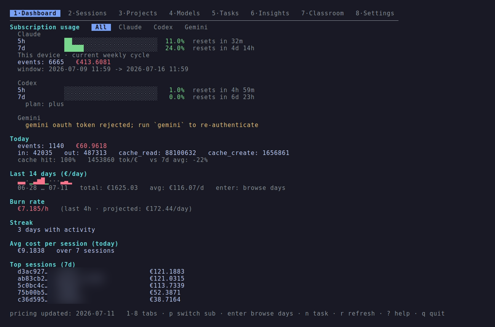
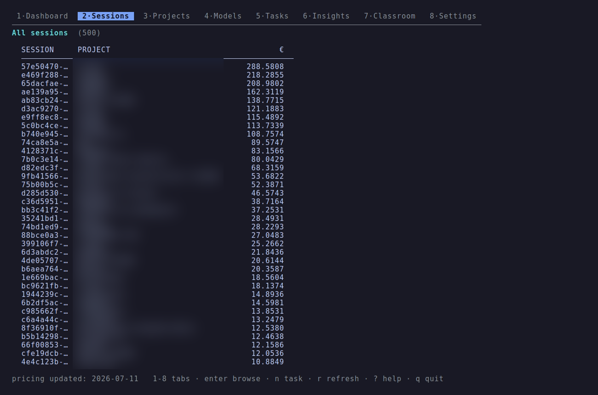
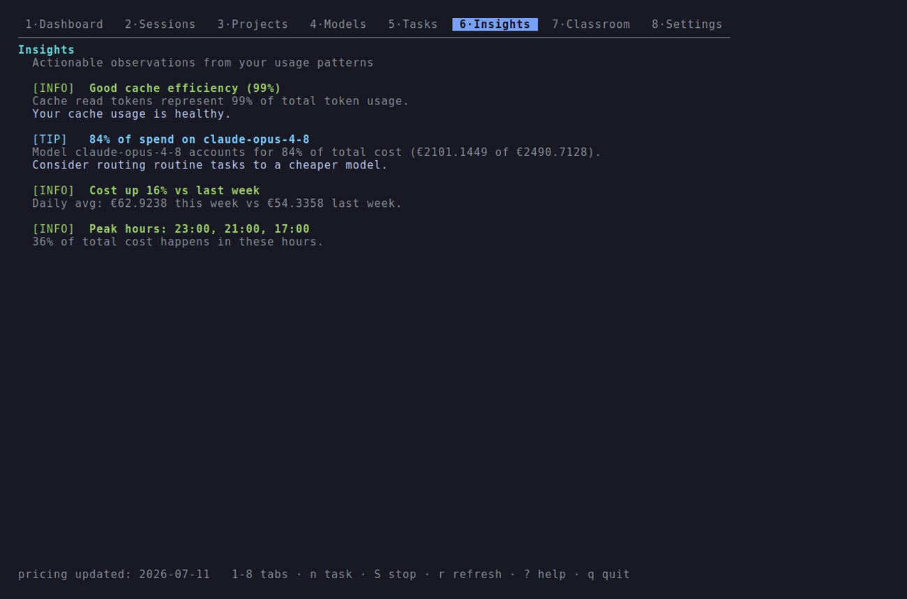

<!--
  ClaudeOps landing — FullFran brand, Tokyo Night palette, terminal aesthetic.
  Self-contained single page for GitHub Pages (served from /docs on main).
  Bilingual EN/ES via [data-es] attributes + toggle. Real TUI screenshots in /docs/assets.
-->
<meta charset="utf-8" />
<meta name="viewport" content="width=device-width, initial-scale=1" />
<title>ClaudeOps — Know the real cost of Claude Code</title>
<meta name="description" content="Local TUI to track Claude Code usage, costs, and tasks. Shows the real subscription % from Anthropic's usage API — not estimates. Single binary, no daemon, no SaaS." />

<meta property="og:type" content="website" />
<meta property="og:title" content="ClaudeOps — Know the real cost of Claude Code" />
<meta property="og:description" content="Local TUI for Claude Code usage, costs, and tasks. Real subscription %, not estimates. Single Go binary, no SaaS." />
<meta property="og:image" content="https://fullfran.github.io/claudeops-tui/assets/dashboard.png" />
<meta property="og:url" content="https://fullfran.github.io/claudeops-tui/" />
<meta name="theme-color" content="#1a1b26" />
<link rel="icon" href="data:image/svg+xml,%3Csvg xmlns='http://www.w3.org/2000/svg' viewBox='0 0 32 32'%3E%3Crect width='32' height='32' rx='7' fill='%231a1b26'/%3E%3Cpath d='M9 10 L15 16 L9 22' stroke='%237aa2f7' stroke-width='2.6' fill='none' stroke-linecap='round' stroke-linejoin='round'/%3E%3Cpath d='M17 22 H24' stroke='%239ece6a' stroke-width='2.6' fill='none' stroke-linecap='round'/%3E%3C/svg%3E" />

<link rel="preconnect" href="https://fonts.googleapis.com" />
<link rel="preconnect" href="https://fonts.gstatic.com" crossorigin />
<link href="https://fonts.googleapis.com/css2?family=Geist:wght@400;500;600&family=JetBrains+Mono:wght@400;500;600;700&display=swap" rel="stylesheet" />

<style>
  /* ─────────────────────────────  Tokyo Night tokens  ───────────────────────────── */
  :root {
    --bg:        #1a1b26;
    --bg-deep:   #16161e;
    --panel:     #1f2335;
    --panel-2:   #24283b;
    --border:    #2c3049;
    --border-lit:#3b4261;

    --fg:        #c0caf5;
    --fg-strong: #e6ecff;
    --muted:     #9aa5ce;
    --dim:       #565f89;

    --blue:      #7aa2f7;
    --cyan:      #7dcfff;
    --purple:    #bb9af7;
    --green:     #9ece6a;
    --orange:    #ff9e64;
    --red:       #f7768e;
    --teal:      #73daca;

    --accent:    var(--blue);
    --radius-sm: 6px;
    --radius:    10px;
    --maxw:      1120px;
    --font-sans: "Geist", ui-sans-serif, system-ui, -apple-system, sans-serif;
    --font-mono: "JetBrains Mono", ui-monospace, "SFMono-Regular", "Menlo", monospace;
  }

  * { box-sizing: border-box; }
  html { scroll-behavior: smooth; }
  @media (prefers-reduced-motion: reduce) { html { scroll-behavior: auto; } }

  body {
    margin: 0;
    background: var(--bg);
    color: var(--fg);
    font-family: var(--font-sans);
    font-size: 16px;
    line-height: 1.6;
    -webkit-font-smoothing: antialiased;
    text-rendering: optimizeLegibility;
    overflow-x: hidden;
  }

  body::before {
    content: "";
    position: fixed;
    inset: 0 0 auto 0;
    height: 22rem;
    background: radial-gradient(60% 100% at 50% 0%, rgba(122,162,247,0.14), transparent 70%);
    pointer-events: none;
    z-index: 0;
  }

  a { color: var(--blue); text-decoration: none; }
  a:hover { color: var(--cyan); }
  ::selection { background: rgba(122,162,247,0.28); color: var(--fg-strong); }
  :focus-visible { outline: 2px solid var(--blue); outline-offset: 2px; border-radius: 3px; }

  .wrap { width: 100%; max-width: var(--maxw); margin: 0 auto; padding: 0 24px; }
  .mono { font-family: var(--font-mono); }
  .accent { color: var(--blue); }

  section { position: relative; z-index: 1; }
  img { max-width: 100%; display: block; }

  /* ─────────────────────────────  Nav  ───────────────────────────── */
  header.nav {
    position: sticky; top: 0; z-index: 50;
    background: rgba(26,27,38,0.82);
    backdrop-filter: saturate(140%) blur(8px);
    border-bottom: 1px solid var(--border);
  }
  .nav-inner { display: flex; align-items: center; justify-content: space-between; height: 56px; gap: 16px; }
  .brand {
    font-family: var(--font-mono); font-weight: 600; font-size: 15px; letter-spacing: -0.01em;
    color: var(--fg-strong); display: inline-flex; align-items: center; gap: 8px;
  }
  .brand .prompt { color: var(--green); }
  .brand .path   { color: var(--muted); }

  nav.links { display: flex; align-items: center; gap: 4px; }
  nav.links a {
    font-family: var(--font-mono); font-size: 13px; color: var(--muted);
    padding: 7px 11px; border-radius: var(--radius-sm);
    transition: color .15s ease, background .15s ease;
  }
  nav.links a:hover { color: var(--fg-strong); background: var(--panel); }
  nav.links a.gh { color: var(--fg-strong); border: 1px solid var(--border-lit); }
  nav.links a.gh:hover { border-color: var(--blue); background: rgba(122,162,247,0.08); }
  @media (max-width: 760px) { nav.links a.hide-sm { display: none; } }
  /* progressively lighten the nav so it never overflows narrow screens */
  @media (max-width: 560px) {
    .nav-inner { gap: 10px; }
    nav.links { gap: 6px; }
    nav.links a { padding: 6px 9px; }
    nav.links a[href="#install"] { display: none; }
  }
  @media (max-width: 400px) {
    .brand { font-size: 13.5px; gap: 6px; }
    .brand .path { display: none; }
    nav.links a.gh { padding: 6px 8px; }
    nav.links { gap: 4px; }
  }

  /* language toggle */
  .lang {
    display: inline-flex; border: 1px solid var(--border-lit); border-radius: var(--radius-sm);
    overflow: hidden; margin-left: 4px;
  }
  .lang button {
    font-family: var(--font-mono); font-size: 12px; color: var(--muted);
    background: transparent; border: 0; padding: 6px 9px; cursor: pointer;
    transition: color .15s ease, background .15s ease;
  }
  .lang button:hover { color: var(--fg-strong); }
  .lang button[aria-pressed="true"] { color: #16161e; background: var(--blue); font-weight: 600; }

  /* ─────────────────────────────  Hero  ───────────────────────────── */
  .hero { padding: 84px 0 56px; }
  .badge {
    display: inline-flex; align-items: center; gap: 8px;
    font-family: var(--font-mono); font-size: 12px; color: var(--muted);
    border: 1px solid var(--border); background: var(--panel);
    padding: 5px 12px; border-radius: 999px; margin-bottom: 26px;
  }
  .badge .dot { width: 6px; height: 6px; border-radius: 50%; background: var(--green); }
  h1 {
    font-family: var(--font-mono); font-weight: 700;
    font-size: clamp(32px, 5.4vw, 56px); line-height: 1.05; letter-spacing: -0.03em;
    margin: 0 0 20px; color: var(--fg-strong); text-wrap: balance; max-width: 16ch;
  }
  h1 .hl { color: var(--blue); }
  .lead {
    font-size: clamp(16px, 2.2vw, 19px); color: var(--muted);
    max-width: 56ch; margin: 0 0 32px; text-wrap: pretty;
  }
  .lead strong { color: var(--fg-strong); font-weight: 600; }

  .cta-row { display: flex; flex-wrap: wrap; gap: 12px; align-items: center; }
  .btn {
    display: inline-flex; align-items: center; gap: 8px;
    font-family: var(--font-mono); font-size: 14px; font-weight: 500;
    padding: 11px 18px; border-radius: var(--radius-sm);
    border: 1px solid transparent; cursor: pointer;
    transition: background .15s ease, border-color .15s ease, color .15s ease, transform .15s ease;
  }
  .btn-primary { background: var(--blue); color: #16161e; font-weight: 600; }
  .btn-primary:hover { background: var(--cyan); color: #16161e; }
  .btn-ghost { background: transparent; color: var(--fg-strong); border-color: var(--border-lit); }
  .btn-ghost:hover { border-color: var(--blue); background: rgba(122,162,247,0.07); }
  .btn:active { transform: translateY(1px); }

  .install {
    margin-top: 28px; max-width: 620px;
    display: flex; align-items: center; gap: 10px;
    background: var(--bg-deep); border: 1px solid var(--border);
    border-radius: var(--radius); padding: 12px 12px 12px 16px;
    font-family: var(--font-mono); font-size: 13.5px;
  }
  .install .sigil { color: var(--green); user-select: none; }
  .install code { color: var(--fg); overflow-x: auto; white-space: nowrap; flex: 1; scrollbar-width: none; }
  .install code::-webkit-scrollbar { display: none; }
  .copy-btn {
    flex-shrink: 0; font-family: var(--font-mono); font-size: 12px; color: var(--muted);
    background: var(--panel); border: 1px solid var(--border);
    border-radius: var(--radius-sm); padding: 6px 10px; cursor: pointer;
    transition: color .15s ease, border-color .15s ease;
  }
  .copy-btn:hover { color: var(--fg-strong); border-color: var(--border-lit); }
  .copy-btn.copied { color: var(--green); border-color: var(--green); }

  /* ─────────────────────────────  Terminal window (real screenshot frame)  ───────────────────────────── */
  .term {
    margin-top: 56px; background: var(--bg-deep);
    border: 1px solid var(--border); border-radius: 12px; overflow: hidden;
    box-shadow: 0 24px 60px -30px rgba(0,0,0,0.85);
  }
  .term-bar {
    display: flex; align-items: center; gap: 8px;
    padding: 11px 14px; border-bottom: 1px solid var(--border); background: var(--panel);
  }
  .term-bar .tl { display: flex; gap: 7px; }
  .term-bar .tl i { width: 11px; height: 11px; border-radius: 50%; display: block; }
  .term-bar .tl .r { background: #f7768e; }
  .term-bar .tl .y { background: #e0af68; }
  .term-bar .tl .g { background: #9ece6a; }
  .term-bar .title { font-family: var(--font-mono); font-size: 12px; color: var(--dim); margin: 0 auto; transform: translateX(-24px); }
  .term img { width: 100%; height: auto; background: var(--bg); }

  /* ─────────────────────────────  Section scaffolding  ───────────────────────────── */
  .section { padding: 72px 0; border-top: 1px solid var(--border); }
  .eyebrow { font-family: var(--font-mono); font-size: 12px; color: var(--blue); letter-spacing: 0.02em; margin-bottom: 12px; }
  .eyebrow::before { content: "// "; color: var(--dim); }
  h2 {
    font-family: var(--font-mono); font-weight: 600; font-size: clamp(24px, 3.4vw, 32px);
    letter-spacing: -0.02em; line-height: 1.15; color: var(--fg-strong); margin: 0 0 14px; text-wrap: balance;
  }
  .section-lead { color: var(--muted); max-width: 60ch; margin: 0 0 40px; font-size: 16.5px; }
  .section-lead code, .lead code { font-family: var(--font-mono); }

  /* differentiator */
  .diff { display: grid; grid-template-columns: 1fr 1fr; gap: 20px; }
  @media (max-width: 780px) { .diff { grid-template-columns: 1fr; } }
  .diff-card { border: 1px solid var(--border); border-radius: var(--radius); padding: 24px; background: var(--panel); }
  .diff-card.bad { opacity: 0.72; }
  .diff-card h3 { font-family: var(--font-mono); font-size: 14px; margin: 0 0 14px; display: flex; align-items: center; gap: 8px; color: var(--fg-strong); }
  .diff-card .mark { font-family: var(--font-mono); font-weight: 700; }
  .diff-card.bad .mark { color: var(--red); }
  .diff-card.good .mark { color: var(--green); }
  .diff-card.good { border-color: var(--border-lit); }
  .diff-card ul { margin: 0; padding-left: 18px; color: var(--muted); font-size: 14.5px; }
  .diff-card li { margin: 7px 0; }
  .diff-card li b { color: var(--fg-strong); font-weight: 600; }

  /* gallery of real shots */
  .gallery { display: grid; grid-template-columns: 1fr 1fr; gap: 20px; margin-top: 8px; }
  @media (max-width: 780px) { .gallery { grid-template-columns: 1fr; } }
  .shot { border: 1px solid var(--border); border-radius: var(--radius); overflow: hidden; background: var(--bg-deep); }
  .shot .cap { font-family: var(--font-mono); font-size: 12px; color: var(--muted); padding: 10px 14px; border-bottom: 1px solid var(--border); background: var(--panel); }
  .shot .cap b { color: var(--fg-strong); font-weight: 600; }
  .shot img { width: 100%; height: auto; }

  /* feature grid */
  .grid { display: grid; grid-template-columns: repeat(3, 1fr); gap: 16px; }
  @media (max-width: 900px) { .grid { grid-template-columns: repeat(2, 1fr); } }
  @media (max-width: 600px) { .grid { grid-template-columns: 1fr; } }
  .card { border: 1px solid var(--border); border-radius: var(--radius); padding: 22px 20px; background: var(--panel); transition: border-color .18s ease, transform .18s ease; }
  .card:hover { border-color: var(--border-lit); transform: translateY(-2px); }
  .card .ico { font-family: var(--font-mono); font-size: 13px; font-weight: 700; width: 34px; height: 34px; display: grid; place-items: center; border: 1px solid var(--border-lit); border-radius: var(--radius-sm); color: var(--blue); margin-bottom: 14px; }
  .card h3 { font-family: var(--font-mono); font-size: 15px; color: var(--fg-strong); margin: 0 0 8px; letter-spacing: -0.01em; }
  .card p { margin: 0; color: var(--muted); font-size: 14px; line-height: 1.6; }
  .card p code { font-family: var(--font-mono); font-size: 12.5px; color: var(--cyan); background: var(--bg-deep); padding: 1px 5px; border-radius: 4px; }

  /* how it works */
  .flow { display: grid; grid-template-columns: repeat(4, 1fr); gap: 14px; }
  @media (max-width: 860px) { .flow { grid-template-columns: 1fr 1fr; } }
  @media (max-width: 480px) { .flow { grid-template-columns: 1fr; } }
  .step { border: 1px solid var(--border); border-radius: var(--radius); padding: 20px; background: var(--panel); }
  .step .n { font-family: var(--font-mono); font-size: 12px; color: var(--dim); margin-bottom: 10px; }
  .step h3 { font-family: var(--font-mono); font-size: 14.5px; color: var(--fg-strong); margin: 0 0 6px; }
  .step p { margin: 0; color: var(--muted); font-size: 13.5px; }
  .step p code { font-family: var(--font-mono); font-size: 12px; color: var(--teal); }

  /* MCP */
  .mcp { display: grid; grid-template-columns: 1.1fr 0.9fr; gap: 32px; align-items: center; }
  @media (max-width: 840px) { .mcp { grid-template-columns: 1fr; } }
  .quote { border-left: 2px solid var(--purple); padding: 4px 0 4px 16px; color: var(--fg); font-family: var(--font-mono); font-size: 14px; margin: 0 0 14px; }
  .quote .who { color: var(--dim); }
  .code-block { background: var(--bg-deep); border: 1px solid var(--border); border-radius: var(--radius); padding: 16px 18px; overflow-x: auto; font-family: var(--font-mono); font-size: 13px; line-height: 1.7; }
  .code-block .cm { color: var(--dim); }
  .code-block .p { color: var(--green); }
  .code-block .c-green { color: var(--green); }
  .code-block .c-dim { color: var(--dim); }

  /* quickstart */
  .qs { max-width: 720px; }
  .qs-step { display: flex; gap: 16px; padding: 18px 0; border-top: 1px solid var(--border); }
  .qs-step:first-child { border-top: none; }
  .qs-num { flex-shrink: 0; width: 30px; height: 30px; border-radius: 50%; border: 1px solid var(--border-lit); display: grid; place-items: center; font-family: var(--font-mono); font-size: 13px; color: var(--blue); }
  .qs-step > div { flex: 1; min-width: 0; }
  .qs-step h3 { font-family: var(--font-mono); font-size: 15px; color: var(--fg-strong); margin: 3px 0 8px; }
  .qs-step .code-block { font-size: 12.5px; }

  /* footer */
  footer { border-top: 1px solid var(--border); padding: 40px 0 56px; position: relative; z-index: 1; background: var(--bg-deep); }
  .foot-inner { display: flex; justify-content: space-between; align-items: center; gap: 20px; flex-wrap: wrap; }
  .foot-brand { font-family: var(--font-mono); font-size: 14px; color: var(--fg-strong); }
  .foot-brand .prompt { color: var(--green); }
  .foot-links { display: flex; gap: 18px; font-family: var(--font-mono); font-size: 13px; }
  .foot-links a { color: var(--muted); }
  .foot-links a:hover { color: var(--fg-strong); }
  .foot-note { color: var(--dim); font-size: 12.5px; font-family: var(--font-mono); margin-top: 18px; }

  /* reveal-on-scroll — only hidden when JS is present */
  .js .reveal { opacity: 0; transform: translateY(14px); transition: opacity .6s ease, transform .6s ease; }
  .js .reveal.in { opacity: 1; transform: none; }
  @media (prefers-reduced-motion: reduce) { .js .reveal { opacity: 1; transform: none; transition: none; } }
</style>

<!-- ─────────────────────────────  NAV  ───────────────────────────── -->
<header class="nav">
  <div class="wrap nav-inner">
    <span class="brand"><span class="prompt">❯</span> claudeops<span class="path">·tui</span></span>
    <nav class="links">
      <a href="#why" class="hide-sm" data-es="por qué">why</a>
      <a href="#features" class="hide-sm" data-es="features">features</a>
      <a href="#mcp" class="hide-sm">mcp</a>
      <a href="#install" data-es="instalar">install</a>
      <a href="https://github.com/FullFran/claudeops-tui" class="gh" target="_blank" rel="noopener">GitHub ↗</a>
      <span class="lang" role="group" aria-label="Language">
        <button data-lang-btn="en" aria-pressed="true">EN</button>
        <button data-lang-btn="es" aria-pressed="false">ES</button>
      </span>
    </nav>
  </div>
</header>

<!-- ─────────────────────────────  HERO  ───────────────────────────── -->
<section class="hero">
  <div class="wrap">
    <span class="badge"><span class="dot"></span> <span data-es="Local · Open source · Sin SaaS, sin daemon">Local &middot; Open source &middot; No SaaS, no daemon</span></span>
    <h1 data-es='Conoce el coste <span class="hl">real</span> de Claude Code.'>Know the <span class="hl">real</span> cost of Claude Code.</h1>
    <p class="lead" data-es='Un panel local en la terminal que lee tus sesiones de Claude Code, calcula el coste por evento en € y muestra tu <strong>% de suscripción real</strong> directo desde la API de uso de Anthropic — no una estimación contra límites inventados.'>
      A local terminal dashboard that parses your Claude Code sessions, computes
      per-event cost in €, and shows your <strong>real subscription %</strong> straight from
      Anthropic's usage API — not a guess against made-up plan limits.
    </p>

    <div class="cta-row">
      <a class="btn btn-primary" href="#install" data-es="Empezar →">Get started →</a>
      <a class="btn btn-ghost" href="https://github.com/FullFran/claudeops-tui" target="_blank" rel="noopener" data-es="Ver el código">View source</a>
    </div>

    <div class="install">
      <span class="sigil">$</span>
      <code id="install-cmd">go install github.com/fullfran/claudeops-tui/cmd/claudeops@latest</code>
      <button class="copy-btn" id="copy-install" aria-label="Copy install command" data-es="copiar">copy</button>
    </div>

    <!-- real screenshot of the TUI dashboard -->
    <figure class="term reveal" style="margin-bottom:0">
      <div class="term-bar">
        <span class="tl"><i class="r"></i><i class="y"></i><i class="g"></i></span>
        <span class="title mono">claudeops — dashboard</span>
      </div>
      
    </figure>
  </div>
</section>

<!-- ─────────────────────────────  WHY / DIFFERENTIATOR  ───────────────────────────── -->
<section class="section" id="why">
  <div class="wrap">
    <div class="reveal">
      <div class="eyebrow" data-es="la diferencia">the difference</div>
      <h2 data-es="Uso real, no estimaciones.">Real usage, not estimates.</h2>
      <p class="section-lead" data-es='Cualquier otra herramienta adivina tu cuota restante contando tokens contra un límite fijo. ClaudeOps llama al mismo endpoint no documentado que usa el propio <code style="color:var(--cyan)">/usage</code> de Claude Code — con refresco de token OAuth.'>
        Every other tool guesses your remaining quota by counting tokens against a hard-coded
        plan limit. ClaudeOps calls the same undocumented endpoint Claude Code's own
        <code style="color:var(--cyan)">/usage</code> command uses — with OAuth token refresh.
      </p>
    </div>
    <div class="diff reveal">
      <div class="diff-card bad">
        <h3><span class="mark">✗</span> <span data-es="Cualquier otro tracker">Every other tracker</span></h3>
        <ul>
          <li data-es="Cuenta tokens contra un límite de plan <b>adivinado</b>">Counts tokens against a <b>guessed</b> plan limit</li>
          <li data-es="Se desincroniza en cuanto Anthropic cambia algo">Drifts the moment Anthropic changes anything</li>
          <li data-es="Colapsa las clases de token → <b>coste mal calculado</b>">Collapses token classes → <b>wrong cost math</b></li>
          <li data-es="Trae un daemon de fondo o manda datos a un SaaS">Ships a background daemon or phones home to a SaaS</li>
        </ul>
      </div>
      <div class="diff-card good">
        <h3><span class="mark">✓</span> ClaudeOps</h3>
        <ul>
          <li data-es="Lee el <b>% real de sesión / semana / por modelo</b> desde Anthropic">Reads the <b>real session / weekly / per-model %</b> from Anthropic</li>
          <li data-es="Coste con cuatro clases de token: <b>input · output · cache read · cache create</b>">Four-class token cost: <b>input · output · cache read · cache create</b></li>
          <li data-es="SQLite 100% local (WAL) — <b>nada sale de tu máquina</b>">100% local SQLite (WAL) — <b>nothing leaves your machine</b></li>
          <li data-es="Un solo binario Go. Sin daemon, sin CGO, sin cuenta">One static Go binary. No daemon, no CGO, no account</li>
        </ul>
      </div>
    </div>
  </div>
</section>

<!-- ─────────────────────────────  GALLERY (real shots)  ───────────────────────────── -->
<section class="section">
  <div class="wrap">
    <div class="reveal">
      <div class="eyebrow" data-es="capturas reales">real screenshots</div>
      <h2 data-es="Drill-down hasta el último token.">Drill down to the last token.</h2>
      <p class="section-lead" data-es="Navega sesiones, modelos e insights — todo calculado desde tus propios datos, sin decoración.">Navigate sessions, models, and insights — all computed from your own data, no decoration.</p>
    </div>
    <div class="gallery reveal">
      <figure class="shot">
        <figcaption class="cap"><b>Sessions</b> <span data-es="— coste, tokens y duración por sesión">— cost, tokens and duration per session</span></figcaption>
        
      </figure>
      <figure class="shot">
        <figcaption class="cap"><b>Insights</b> <span data-es="— patrones de uso calculados">— computed usage patterns</span></figcaption>
        
      </figure>
    </div>
  </div>
</section>

<!-- ─────────────────────────────  FEATURES  ───────────────────────────── -->
<section class="section" id="features">
  <div class="wrap">
    <div class="reveal">
      <div class="eyebrow" data-es="lo que obtienes">what you get</div>
      <h2 data-es="Un panel, ocho pestañas, cero conjeturas.">One dashboard, eight tabs, zero guesswork.</h2>
      <p class="section-lead" data-es='Todo se calcula desde tu propio <code style="color:var(--cyan)">~/.claude/projects/*.jsonl</code> — leído de forma incremental con fsnotify y offsets persistidos.'>Everything is computed from your own <code style="color:var(--cyan)">~/.claude/projects/*.jsonl</code> — parsed incrementally with fsnotify and persisted byte offsets.</p>
    </div>
    <div class="grid reveal">
      <div class="card">
        <div class="ico">%</div>
        <h3 data-es="% de suscripción real">Real subscription %</h3>
        <p data-es="Uso en vivo de sesión, semana y por modelo desde la API OAuth de Anthropic, con refresco de token y caché de 5 minutos.">Live session, weekly, and per-model usage from Anthropic's OAuth usage API, with token refresh and a 5-minute cache.</p>
      </div>
      <div class="card">
        <div class="ico">€</div>
        <h3 data-es="Coste de cuatro clases">Four-class cost</h3>
        <p data-es="Coste por evento en € usando input, output, <code>cache_read</code> y <code>cache_create</code> — colapsarlos arruina el cálculo.">Per-event cost in € using input, output, <code>cache_read</code> and <code>cache_create</code> — collapsing them ruins the math.</p>
      </div>
      <div class="card">
        <div class="ico">⛁</div>
        <h3 data-es="SQLite local">Local SQLite</h3>
        <p data-es="Eventos en SQLite modo WAL vía <code>modernc.org/sqlite</code>. Sin CGO, un solo escritor, inserciones idempotentes.">Events stored in WAL-mode SQLite via <code>modernc.org/sqlite</code>. No CGO, single-writer discipline, idempotent inserts.</p>
      </div>
      <div class="card">
        <div class="ico">⌕</div>
        <h3 data-es="Drill-down de sesión">Session drill-down</h3>
        <p data-es="Desglose por modelo, actividad por hora, split de tokens, ratio de cache hit y duración de cualquier sesión.">Per-model breakdown, hourly activity, token split, cache hit ratio, and duration for any session you pick.</p>
      </div>
      <div class="card">
        <div class="ico">✦</div>
        <h3 data-es="Motor de insights">Insights engine</h3>
        <p data-es="Cinco insights calculados: eficiencia de caché, mix de modelos, tendencia de coste, eficiencia de sesión y horas pico — cada uno activable.">Five computed insights: cache efficiency, model mix, cost trend, session efficiency, and peak hours — each toggleable.</p>
      </div>
      <div class="card">
        <div class="ico">▤</div>
        <h3 data-es="Atribución por tarea">Task attribution</h3>
        <p data-es='<code>claudeops task start "…"</code> asocia eventos al trabajo activo por sesión y ventana temporal.'><code>claudeops task start "…"</code> correlates events to active work by session and timestamp window.</p>
      </div>
      <div class="card">
        <div class="ico">⚇</div>
        <h3>MCP server</h3>
        <p data-es="Siete herramientas de solo lectura exponen tus datos a Claude Code, opencode o Cursor para análisis conversacional.">Seven read-only tools expose your data to Claude Code, opencode, or Cursor for conversational analysis.</p>
      </div>
      <div class="card">
        <div class="ico">◫</div>
        <h3 data-es="Multi-proveedor">Multi-provider</h3>
        <p data-es="Proveedores enchufables rastrean más de una suscripción — Claude, Codex y Gemini en la misma vista.">Pluggable providers track more than one subscription — Claude, Codex, and Gemini in one view.</p>
      </div>
      <div class="card">
        <div class="ico">↻</div>
        <h3 data-es="Auto-actualización">Self-update</h3>
        <p data-es="<code>claudeops update</code> actualiza el CLI cuando es seguro, y falla con un mensaje claro cuando no lo es.">
          <code>claudeops update</code> upgrades the CLI when it's safe, and fails loudly with the manual command when it isn't.</p>
      </div>
    </div>
  </div>
</section>

<!-- ─────────────────────────────  HOW IT WORKS  ───────────────────────────── -->
<section class="section">
  <div class="wrap">
    <div class="reveal">
      <div class="eyebrow" data-es="cómo funciona">how it works</div>
      <h2 data-es="De JSONL a dashboard en una pasada.">From JSONL to dashboard in one pass.</h2>
    </div>
    <div class="flow reveal">
      <div class="step">
        <div class="n">01</div>
        <h3 data-es="Recolectar">Collect</h3>
        <p data-es="fsnotify vigila <code>~/.claude/projects</code> y sigue cada archivo desde su offset guardado.">fsnotify watches <code>~/.claude/projects</code> and tails each file from its stored offset.</p>
      </div>
      <div class="step">
        <div class="n">02</div>
        <h3 data-es="Parsear + tarificar">Parse + price</h3>
        <p data-es="Decoder JSONL permisivo → eventos tipados → coste € por evento desde pricing TOML.">Permissive JSONL decoder → typed events → per-event € cost from TOML pricing.</p>
      </div>
      <div class="step">
        <div class="n">03</div>
        <h3 data-es="Guardar">Store</h3>
        <p data-es="Una goroutine escritora drena un canal con buffer hacia SQLite WAL, de forma idempotente.">A single writer goroutine drains a buffered channel into WAL SQLite, idempotently.</p>
      </div>
      <div class="step">
        <div class="n">04</div>
        <h3 data-es="Renderizar">Render</h3>
        <p data-es="Bubbletea refresca los agregados cada 2s y superpone el % de uso real.">Bubbletea refreshes aggregates every 2s and overlays the real usage %.</p>
      </div>
    </div>
  </div>
</section>

<!-- ─────────────────────────────  MCP  ───────────────────────────── -->
<section class="section" id="mcp">
  <div class="wrap">
    <div class="mcp">
      <div class="reveal">
        <div class="eyebrow" data-es="habla con tu uso">talk to your usage</div>
        <h2 data-es="Pregúntale a Claude sobre tu propio gasto.">Ask Claude about your own spend.</h2>
        <p class="section-lead" style="margin-bottom:22px" data-es="El servidor MCP abre tu base de datos en solo lectura y responde a través de Claude Code, opencode o Cursor. Actívalo solo cuando lo necesites — y quítalo para recuperar tokens de contexto.">
          The MCP server opens your database read-only and answers questions through
          Claude Code, opencode, or Cursor. Activate it only when you need it — then remove
          it to reclaim context tokens.
        </p>
        <p class="quote" data-es='"¿En qué proyecto estoy gastando más esta semana?" <span class="who">— y lo sabe.</span>'>"What project am I spending the most on this week?" <span class="who">— and it just knows.</span></p>
        <p class="quote" data-es='"¿Estoy usando bien la caché?" <span class="who">— directo de tus datos.</span>'>"Am I using cache effectively?" <span class="who">— straight from your data.</span></p>
      </div>
      <div class="reveal">
        <div class="code-block"><span class="cm"># register with Claude Code</span>
<span class="p">$</span> claude mcp add claudeops <span class="c-dim">--</span> claudeops mcp

<span class="cm"># 7 read-only tools appear:</span>
  claudeops_summary
  claudeops_sessions
  claudeops_session_detail
  claudeops_projects
  claudeops_models
  claudeops_daily
  claudeops_insights

<span class="cm"># done? reclaim the context</span>
<span class="p">$</span> claude mcp remove claudeops</div>
      </div>
    </div>
  </div>
</section>

<!-- ─────────────────────────────  INSTALL / QUICKSTART  ───────────────────────────── -->
<section class="section" id="install">
  <div class="wrap">
    <div class="reveal">
      <div class="eyebrow">install</div>
      <h2 data-es="Funcionando en un minuto.">Up and running in a minute.</h2>
      <p class="section-lead" data-es='Go puro, sin CGO. Instálalo con <code style="color:var(--cyan)">go install</code> o compílalo desde el código.'>Pure Go, no CGO required. Grab it with <code style="color:var(--cyan)">go install</code> or build from source.</p>
    </div>
    <div class="qs reveal">
      <div class="qs-step">
        <span class="qs-num">1</span>
        <div>
          <h3 data-es="Instala el binario">Install the binary</h3>
          <div class="code-block"><span class="p">$</span> go install github.com/fullfran/claudeops-tui/cmd/claudeops@latest</div>
        </div>
      </div>
      <div class="qs-step">
        <span class="qs-num">2</span>
        <div>
          <h3 data-es="Lanza el dashboard">Launch the dashboard</h3>
          <div class="code-block"><span class="p">$</span> claudeops</div>
        </div>
      </div>
      <div class="qs-step">
        <span class="qs-num">3</span>
        <div>
          <h3 data-es="Rastrea una tarea (opcional)">Track a task (optional)</h3>
          <div class="code-block"><span class="p">$</span> claudeops task start <span class="c-green">"refactor parser"</span>
<span class="p">$</span> claudeops task stop</div>
        </div>
      </div>
      <div class="qs-step">
        <span class="qs-num">4</span>
        <div>
          <h3 data-es="O compila desde el código">Or build from source</h3>
          <div class="code-block"><span class="p">$</span> git clone https://github.com/FullFran/claudeops-tui
<span class="p">$</span> cd claudeops-tui
<span class="p">$</span> CGO_ENABLED=0 go build -o claudeops ./cmd/claudeops</div>
        </div>
      </div>
    </div>
  </div>
</section>

<!-- ─────────────────────────────  FOOTER  ───────────────────────────── -->
<footer>
  <div class="wrap foot-inner">
    <span class="foot-brand"><span class="prompt">❯</span> fullfran/claudeops-tui</span>
    <nav class="foot-links">
      <a href="https://github.com/FullFran/claudeops-tui" target="_blank" rel="noopener">GitHub</a>
      <a href="https://github.com/FullFran/claudeops-tui/blob/main/README.md" target="_blank" rel="noopener">Docs</a>
      <a href="https://github.com/FullFran/claudeops-tui/issues" target="_blank" rel="noopener">Issues</a>
      <a href="#install" data-es="Instalar">Install</a>
    </nav>
  </div>
  <div class="wrap">
    <p class="foot-note" data-es="Hecho por FullFran · tus datos nunca salen de tu máquina · Tokyo Night ☾">Built by FullFran &middot; your data never leaves your machine &middot; Tokyo Night ☾</p>
  </div>
</footer>

<script>
  // language toggle (progressive enhancement)
  (function () {
    var htmlEl = document.documentElement;
    htmlEl.classList.add("js");
    var nodes = document.querySelectorAll("[data-es]");
    nodes.forEach(function (n) { n.dataset.en = n.innerHTML; });
    var btns = document.querySelectorAll("[data-lang-btn]");

    function apply(lang) {
      nodes.forEach(function (n) { n.innerHTML = lang === "es" ? n.dataset.es : n.dataset.en; });
      htmlEl.setAttribute("lang", lang);
      btns.forEach(function (b) { b.setAttribute("aria-pressed", String(b.getAttribute("data-lang-btn") === lang)); });
      try { localStorage.setItem("claudeops-lang", lang); } catch (e) {}
    }

    var saved; try { saved = localStorage.getItem("claudeops-lang"); } catch (e) {}
    var initial = saved || ((navigator.language || "en").toLowerCase().indexOf("es") === 0 ? "es" : "en");
    btns.forEach(function (b) {
      b.addEventListener("click", function () { apply(b.getAttribute("data-lang-btn")); });
    });
    apply(initial);
  })();

  // copy install command
  (function () {
    var btn = document.getElementById("copy-install");
    var cmd = document.getElementById("install-cmd");
    if (btn && cmd && navigator.clipboard) {
      btn.addEventListener("click", function () {
        navigator.clipboard.writeText(cmd.textContent.trim()).then(function () {
          var prev = btn.dataset.en;
          btn.textContent = "copied ✓"; btn.classList.add("copied");
          setTimeout(function () {
            btn.textContent = (htmlDocLang() === "es" ? "copiar" : "copy"); btn.classList.remove("copied");
          }, 1800);
        });
      });
    }
    function htmlDocLang() { return document.documentElement.getAttribute("lang") || "en"; }
  })();

  // reveal-on-scroll (respects reduced-motion via CSS)
  (function () {
    var els = document.querySelectorAll(".reveal");
    if (!("IntersectionObserver" in window)) { els.forEach(function (el) { el.classList.add("in"); }); return; }
    var io = new IntersectionObserver(function (entries) {
      entries.forEach(function (e) { if (e.isIntersecting) { e.target.classList.add("in"); io.unobserve(e.target); } });
    }, { threshold: 0.1, rootMargin: "0px 0px -8% 0px" });
    els.forEach(function (el) { io.observe(el); });
  })();
</script>
